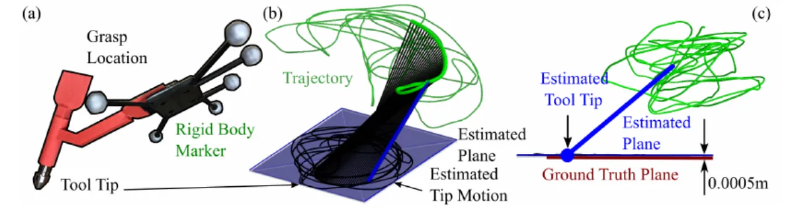
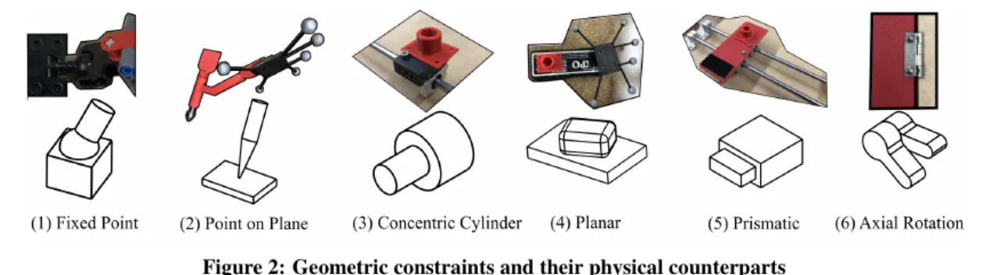
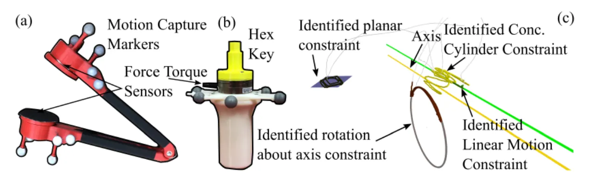
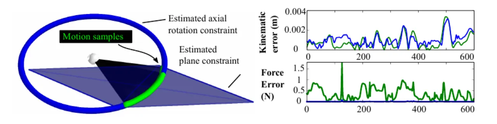

演示中蕴含大量几何约束（门的铰链、抽屉的滑轨、笔尖贴着纸面）。本文构建一个约束模型库，先用运动学信息拟合每种约束，再用力/力矩信息在运动学难以区分的歧义情形下做裁决，从而在不知道工具接触几何的前提下，同时判定约束类型并估计其几何参数。
几何约束是物理任务的核心：它们限定了物体在环境中如何运动。知道约束的几何，交互就会容易得多——正如论文所举的例子："opening a door is easier if one knows that the door is attached to a hinge and where the axis of the hinge is." 在 programming by demonstration 中，这类约束通常靠人工指定；若能从演示中自动推断，就能简化编程，并为 hybrid force-position control 自动提供参数。
但已有方法受限：C-Learn、CHAMP、null-space 学习等只能识别线、面、弧等简单约束，且大多不使用 reaction force/moment 信息，需要预先指定工具几何。本文指出三条关键洞见——(1) 受约束的运动可建模为刚体上的几何约束方程；(2) 仅凭 kinematic information（位置与朝向）不足以确定约束类型；(3) force/moment 信息可用来区分这些类型。
"Our approach does not require information about the constraint type or contact geometry; it can determine both simultaneously."

输入是一段已分段的演示（每段只含单一约束，分段沿用 [11] 的 force action recognition），记录了位置、朝向、线速度、角速度、力、力矩。对每一段：先把库中所有约束模型都拟合一遍，再用运动学 + 力 + 力矩三重判据逐样本打分，最后通过投票选出符合样本最多的约束类型并输出其参数 α。

把受约束物体建模为 SE(3) 中的刚体，配置 p = (r, q)，受 k 个约束方程 Φ(p) = 0。许可的虚位移须满足 δΦ = Φ_r δr + Φ_π δπ = 0；再由虚功原理（约束反力/反力矩不做功）δr·f + δπ·n = 0，联立得到 Φ_rᵀλ + f = 0 与 Φ_πᵀλ + n = 0（λ 为 Lagrange 乘子）。这套推导是 multi-body dynamics 中的标准做法，把几何约束方程直接联系到许可的 reaction force/moment——正是后续用力信息消歧的理论基础。每种约束（如 point-on-plane 用两个 exponential coordinates 表示平面法向、Rodrigues 公式生成旋转）都有一组参数 α 刻画其几何。
对每一种约束模型，把 δp、δπ 换成实测线速度 v、角速度 ω，在所有样本上做非线性最小二乘回归，最小化 Σ ΦᵀΦ + δΦᵀδΦ，用 BFGS 求解，得到该模型的参数 α。
不能简单挑"拟合误差最小"的模型——不同约束方程量纲不同、不可比。改为逐模型独立评估：用运动学误差判据（Table 1，量纲为距离，如"prismatic 用估计直线到坐标原点的距离"、"axial rotation 用刚体上转点到转轴的距离"）对每个样本判断是否许可，设阈值得到布尔表 L_k。
很多情况下运动学之后仍有歧义（例如 fixed point 的运动同时很符合更一般的 point-on-plane 模型）。用实测力/力矩反解 Lagrange 乘子 λ（式 31，最小二乘），据此算出估计反力 f_react = Φ_rᵀλ、反力矩 n_react = Φ_πᵀλ；扣除反力/反力矩得残差，再沿运动方向扣除摩擦 f_μ、n_μ，最终得力误差 f_error、力矩误差 n_error（式 38–39），阈值化得到布尔表 L_f、L_n。论文强调：必须先扣反力再扣摩擦，因为虚功方程中力与力矩耦合，二者做的功可能相互抵消。此处未补偿惯性力与重力，前提是加速度小、或运动方向垂直于重力（如拉抽屉、擦黑板）。
每个模型有 L_p、L_f、L_n 三张布尔表，取交集得到该约束的合格样本数；合格样本最多的约束即为选中类型，并输出其几何参数。
在一个自制 testbed 上评测，用两种手持工具采集人类演示：Instrumented Tongs（模拟机器人夹爪，Optitrack 动捕 + 两个 ATIMini40 力矩传感器，因夹爪与物体非刚接需在物体上另贴 marker）和 Constraint Sabre（用 hex key 刚性接到被约束物体，工具自身运动即可作为物体运动的代理）。每种约束由两名演示者（其中一人非作者）各做约 10 次试验，试验间重新摆放 testbed 以增加位置变化。

用 tongs 交互 5 种约束，共 98 次试验（去掉 2 次动捕损坏）。分类准确率如下（fit error 为假设约束推断正确后、按运动学判据算出的拟合误差，单位 m）：
| Constraint | Classification Accuracy | Fit Error Mean | S.D. | Min | Max |
|---|---|---|---|---|---|
| Prismatic | 100% | 0.000104 | 1.99e-05 | 6.58e-05 | 0.00014 |
| Axial Rotation | 100% | 0.00106 | 0.000247 | 0.000449 | 0.00148 |
| Fixed Point | 75% | 0.000771 | 0.000177 | 0.000573 | 0.00135 |
| Point on Plane | 100% | 0.000166 | 4.26e-05 | 0.000110 | 0.000248 |
| Planar Motion | 100% | 0.000894 | 0.000445 | 0.000440 | 0.00249 |
Fixed Point 只有 75%：它被误判为 rotational constraint（5%）和 point-on-plane constraint（20%），因为这三种约束的反力/反力矩彼此耦合（见式 40），且大力矩会使式 31 估计的 Lagrange 乘子出现偏差。关键对照：若不做 force/moment 阈值化，整体准确率仅 57%——证明力/力矩信息对区分歧义约束确实有用。
两名演示者（一人非作者）用 sabre 对 linear、axial rotation、concentric cylinder、planar motion 四种约束做 10 与 13 次交互，全部在同一段演示内完成（约束之间夹着 free space motion，见 Figure 3）。整体预测准确率分别为 linear 87% / axial rotation 96% / concentric cylinder 91% / planar 100%。误判多因 planar 是更一般的模型（linear、rotational 分别有 9%、4% 被误判为 planar，尤其当施加的力/力矩很小、力判据失效时）；concentric cylinder 偶尔（5%）被判为 axial rotation。sabre 整体拟合精度低于 tongs，主要来自 hex key 配合处的机械间隙——若能直接测量被约束物体的刚体运动，精度可望与 tongs 相当。

自由度多的约束（如 point on plane）需要足够多样、distinct 的样本才能可靠估参。论文示例：对 point-on-plane，用连续时间样本拟合时，直到累积约 1 秒运动 fit error 才降到可接受水平；而从整段演示中随机采样，样本更 distinct、信息更丰富，误差随样本数更快下降。启示：直线平移且不改变朝向的运动无法确定平面位置——演示需带足够的姿态/位置变化。
方法不补偿被约束物体的惯性与重力效应，在某些情形下这些效应显著——作者举例"interacting with constrained exercise equipment"。当前假设加速度小、或运动方向垂直于重力（拉抽屉、擦轻质黑板擦）时可忽略。
力/力矩目前只用于第 3 步的评估/消歧，没有进入第 1 步的模型拟合；作者认为把它纳入拟合可能进一步提升性能。
论文希望看到该方法嵌入一个完整的 teaching-by-demonstration 系统中，并将其列为有趣的未来工作。
方法假定输入已被分段为"每段单一约束"，分段由外部方法 [11] 完成；分段质量会直接影响后续识别。
式 31 在测到大力矩时不可靠（会使 Lagrange 乘子有偏，导致 Fixed Point 掉到 75%）；此外识别范围受限于预先构建的六类约束库，库外约束需另行加入。阈值也需按约束尺度与仪器精度调（Table 2 给出实验用值）。